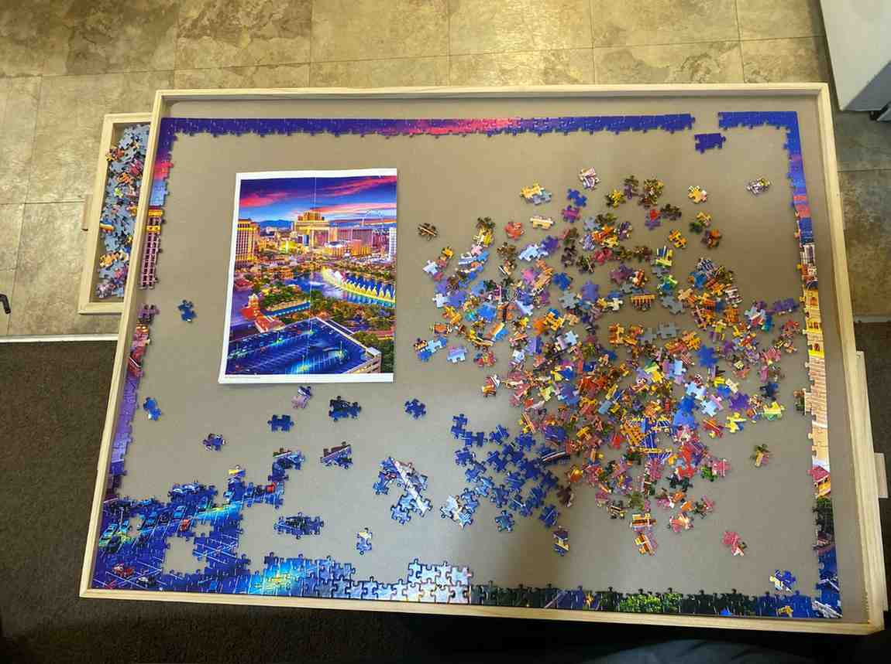

About Me
Hi everyone! I'm Isabelle, a 22-year-old based in the beautiful state of Utah. I'm passionate about exploring creativity, learning, and growth, and I love working on projects that challenge me to think outside the box. When I’m not coding or exploring new ideas, you can find me planning meaningful moments (I’m currently planning my wedding with my wonderful fiancé, Nathan!) or enjoying the natural beauty that Utah has to offer. I am also the number one fan of coke zero!
Puzzle Lover
Since I was little, I've loved putting together puzzles, but recently, I've been enjoying it even more! I challenged myself and started working on a 1500-piece puzzle of Las Vegas. It has been a challenging but rewarding experience—I feel so happy and proud of myself for managing to put some pieces together. Here's a photo of my journey so far!